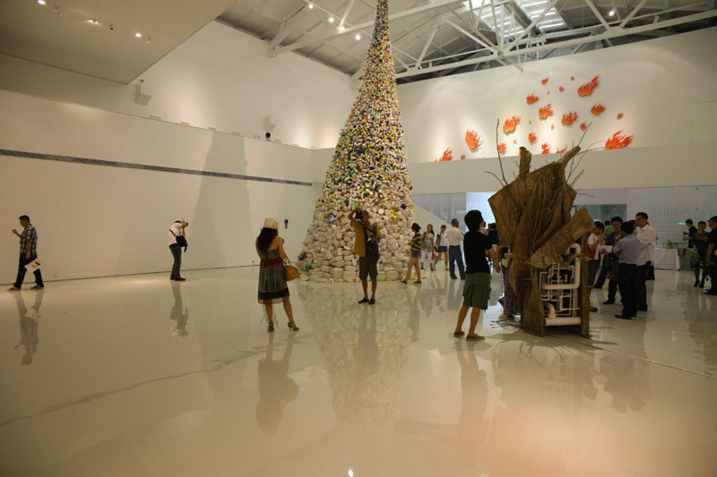
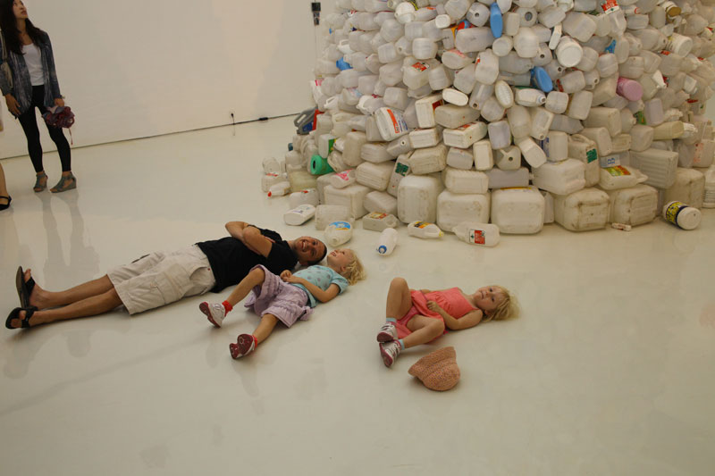
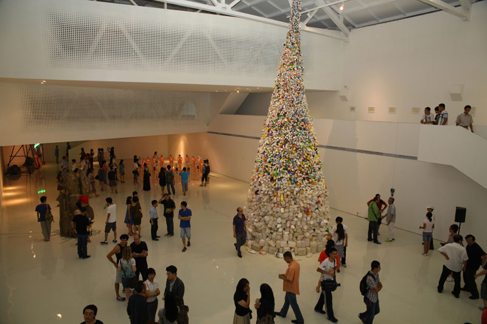
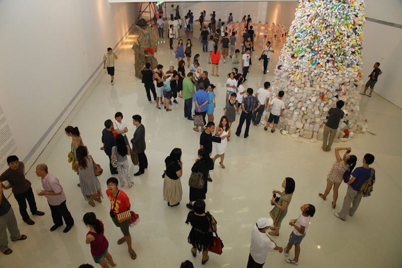
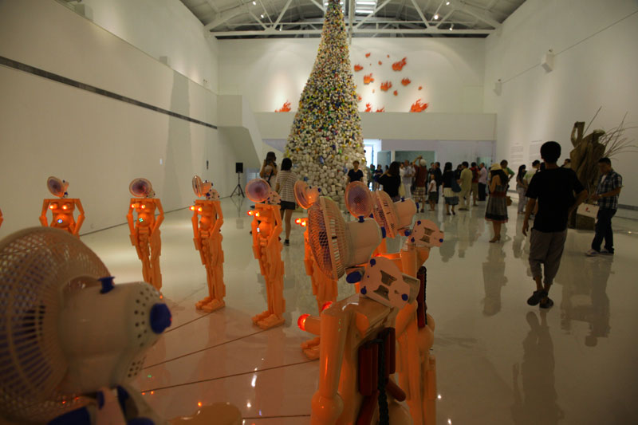
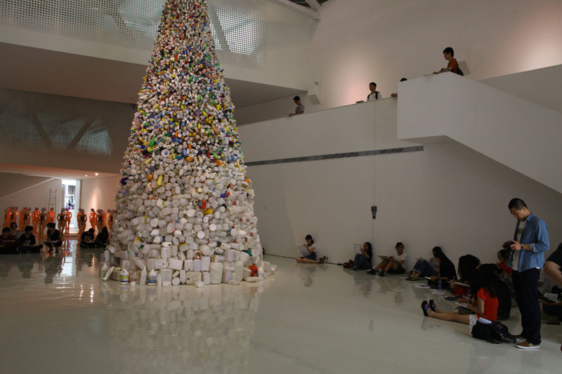
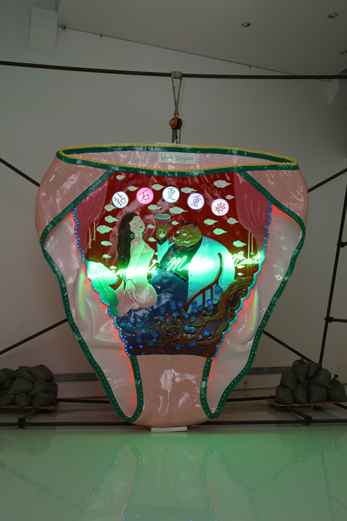
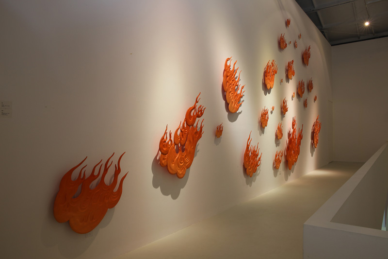
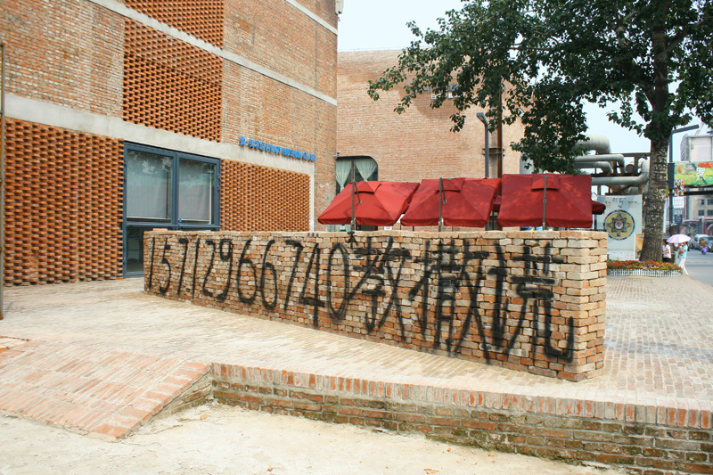
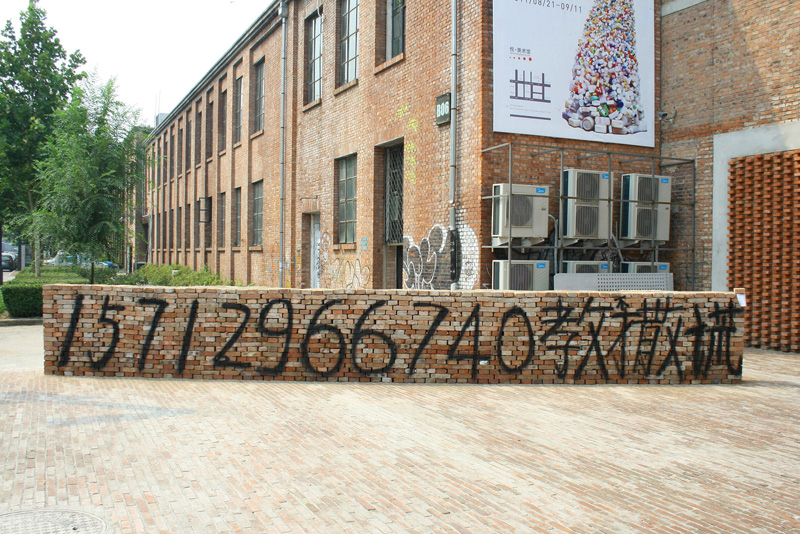

Displacement--Wang Zhiyuan solo Exhibition
Curator: Huang Du
Duration:21/08-11/9 2011
Venue: Enjoy Museum of Art, 798 Art District, Beijing
In this exhibition you can see six sculpture and installation art works. They are the compilation of artist in recent ten years, including 'Fire', 'Underpants', 'Black Widow' and 'Thrown to the wind' etc. All artworks not only reflect his thought and analysis on nature, desire, violence, confusion and other issues, but also represent his questioning and criticism of 'original' art. Especially his new installation artwork, 'Thrown to the wind' (11.5 meters high), which is made of large and small waste plastic bottles built up on a rotating body like a hurricane. You can see all kinds of wasted plastic bottles when you look at them closely; and when you look at them from afar it is a colorful and exquisitely aesthetic object. This contrast makes it seem visually 'misplaced'.










Curated by Huang Du
Displacement: Wang Zhiyuan - Solo Exhibition will showcase six pieces of sculpture or installation work created in the past decade by the artist. All those work inclusive of "fire", "underpants", "widows" and "tornado" as subject matters not only reflect on the artist's contemplation and analysis upon issues relating to people, nature, desire, violence and confusion, but also his debate and criticism against the "originality" of art making. His most recent work Twister in a height of over 11 meters is made up of plastic bottles at various scales, and its shape looks like a wind-thrown spiral. If a viewer read the piece from close-up, he or she sees the work consisted of thousands of plastic bottles at various scales thrown away here and there as rubbish; but if the viewer read from distance, its outlook is so beautiful in color and composition and might be an aesthetic object. This might have evoked a sense of a visual "displacement" by the viewer.
However, Wang Zhiyuan has never stopped over in a visual "displacement" as such, but to focus on methodology of creation with a free and unconstrained sense. Influenced by the notion of Milan Kundera's non-novel novel, he is not only fond of non-art art, but of those unable to be defined by mediums as well. What the artist is even more interested in is to put "improper" things onto a proper place. A method and idea of such a "displacement" has fully expressed the artist's nomadic concept.
Wang Zhiyuan has enlarged his work "underpants" from a smaller one to a super large scale with an intention to differ from its hidden concept of morality, and it became an absolute aesthetic object and signifier of realities. It has been not only an indicator of today's shallow and meretricious lifestyle, but also an irony of the inflation of greed and luxury.
If to say that Wang Zhiyuan's concept were "re-integration", his work Thrown to the Wind and Object of Desire were thus to re-integrate Arte Povera and Pop Art, that is, to reuse the mediums and methods of Arte Povera and the popular colours of Pop Art. But his art is neither Arte Povera nor Pop Art, and comes to be a hybrid art . Wang Zhiyuan has selected devastated plastic bag as his media – the so-called national material. This packing material has fully expressed the taste of Chinese for today, in the meantime, the popularity of plastic rubbish in terms of its quantity is seen in every corner of our environment. In this sense, his work is just a warning against the inflation of greed for materialism and the loss of spiritual pursuit in the rapid growth of China's economy.
Wang Zhiyuan graduated from the Central Academy of Fine Arts in 1984, lived and studied for over ten years in Australia since 1989, and came back to live and conduct creativities in Beijing in 2001. He has attended many important exhibitions. Insofar, this solo exhibition will be a sum-up to his ten-year creativity and reflects upon an attitude of debate and criticism the artist has retained for long.
Displacement: Wang Zhiyuan – Solo Exhibition is the first ever project of one artist Enjoy Art Museum has hosted since its inauguration. Hereby, I am so grateful to all the generosity and support its Director, Wang Feiyue and all his staff has offered.